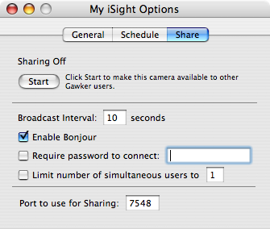
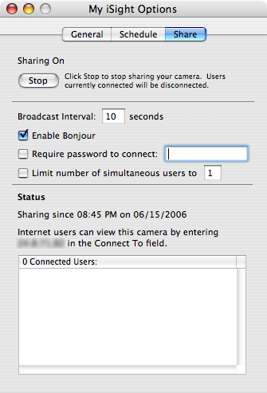

Using Gawker to Share your Camera
Gawker allows you to share your iSight camera with others over the internet. People can view and record time-lapse
movies of whatever it is you want to share with them. If you're interested in sharing your camera, this guide
will show you how. Let's get started...
Select your iSight camera in the camera list and choose "More Options..." from the Gear/Camera Menu and select the "Share" tab. From this window
you can set how exactly you want your camera to be shared.

To configure Sharing:
- Set the "Broadcast Interval" to set how often a new image from your iSight will be sent out to remote users.
- Choose "Enable Bonjour" if you would like users on your immediate network to instantly see your shared camera in their camera list. Click here for an introduction to Bonjour.
- Choose "Require password to connect" if you would like to restrict access to those that can view your camera to those that know the password. To the right of this checkbox is where you specify the password users will have to know. This field is ignored if the checkbox is not checked.
- Choose "Limit number of simultaneous users" if you would like to limit the number of remote users that can connect to your camera at a given time. To the right of this checkbox is where you specify the maximum connections. This field is ignored if the checkbox is not checked.
- Choose a "Port to use for Sharing". There is no need to change this unless you have a need to. If you don't know what this means, leave it alone.
These settings are saved between Gawker sessions so you will only need to revisit these if you want to change how your shared camera is configured. Once these options are all set how you want, click "Start" to begin sharing your camera. The "Share" tab will now change to show you sharing stats.

Once Sharing is On, the Status area will show you when you started sharing, how internet users can connect to your camera, and a list
of IP Addresses of those currently connected to you camera.
If you are not connected to the internet, the field stating "Internet users can view this camera..." will not be shown. This field
shows your IP address on the Internet and if your firewalls are configured properly is what other Gawker users will use to connect to
your camera.
You will notice that your camera's subtitle in the camera list
will now read "My Shared iSight" or something similar depending on what kind of camera you are using. This subtitle will be followed
by a number in brackets that tells you how many people are connected to your camera and if you chose
to limit the number of incoming connections the number of maximum connections is shown as well. So if you limited your
camera to 10 connections, you would see "My Shared iSight [0/10]" as the subtitle.
If you chose to "Enable Bonjour" in the "Share" tab, you may see your shared camera show up in your camera list with a "Bonjour" subtitle. This is because Gawker is looking for cameras that are published using Bonjour and since your camera just became available, it shows up in your camera list. You can prevent Gawker from looking for Bonjour cameras in the Preferences panel.
Once your camera is being shared, you can return to the "Share" tab and change options as you wish. Options change on-the-fly so you can adjust properties without disconnecting current users.
This is all the setup that is required inside of Gawker to share your camera. Depending on your networking setup, you may have to change firewall and router settings to allow outside users to access your camera. If the Mac OS X firewall is enabled, you will need to allow access for the port the camera is shared on. This port can be found in the "Share" tab when sharing is stopped.
Opening a port on the Mac OS X firewall:
- Under the Apple menu in the upper left corner of your screen, select "System Preferences..."
- In the System Preferences window, select "Sharing."
- In the Sharing screen, select the "Firewall" tab.
- Click "New..."
- Under "Port Name:" select "Other"
- For "TCP Port Number(s)" enter the port number from the Share Options screen in Gawker. The default is 7548.
- Enter that same number for the "UDP Port Number(s)"
- Enter "Gawker" for the description (description can be anything)
- Click OK.
This takes care of the Mac OS X firewall. Now you will need to configure port forwarding on your router if necessary. How to do this varies from router to router, so check the manual for your router. If you do not have a router and the computer that has the shared iSight is connected directly to the cable modem/DSL modem/etc, you shouldn't need to do anything. Otherwise, you will have to redirect all traffic the router gets for port 7548 (or whatever port you chose) to the computer that has the shared iSight connected to it. For an excellent explanation of port forwarding, click here for an article on portforward.com. Click here for an explanation of port forwarding on Apple Airport routers on exploitmymac.com.
When all this is completed, you can test your shared camera by typing your Internet IP address from the "Share" screen into the "Connect To" field on the Main Window. If the connection succeeds, you are ready to go! Tell your friends! If it doesn't succeed, double check your firewall and router settings.
See also
Gawker Basics
Using Gawker to Record a Movie
Camera Options in Gawker
Using Gawker to Combine Cameras